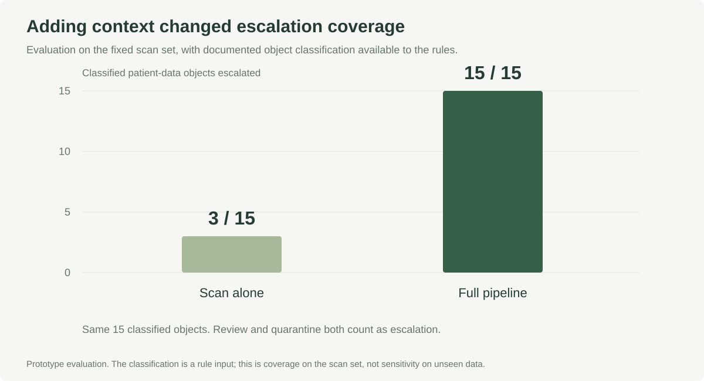

Adding patient context to privacy scans
A preventive privacy guardrail for a patient-data ingestion workflow.
In a 59-file prototype evaluation, the scan alone flagged 3 of 15 patient-data-classified objects. The full pipeline escalated all 15.

Anonymized professional case study. Charts use verified evaluation counts; the architecture schematic is reconstructed. Internal object names, source files and patient-level data are omitted. Results describe a fixed prototype evaluation, not enterprise production performance.
The question
A patient-data workflow needed a preventive control before data entered an analytics platform. A name, address or phone number does not establish patient context by itself: those fields can also describe a healthcare provider.
The goal was to combine content scanning with documented business context, producing a file-level decision that a reviewer could understand.
What I owned
I built a mapper for nested scan outputs, a context engine grounded in the interface agreement and documented classification, and an advisory ML scoring prototype. The mapper normalized 118 scan records across 59 objects, with 27 automated tests checking the transformation.
The engine issued one verdict per file: quarantine, safe, review or clear. Unclassified objects defaulted to review. Row-level evidence could escalate a decision, never downgrade it. Source records were not modified.
Separate detection from interpretation

A scanner observes patterns within a file. The context layer uses documented relationships to interpret who the records describe. In the prototype, row-level evidence was demonstrated on one object; the broader file-level evaluation used the documented object classification.
What the evaluation showed

| Measure | Result |
|---|---|
| Files evaluated | 59 |
| Classified patient-data objects flagged by scan alone | 3 of 15 |
| Classified patient-data objects escalated by full pipeline | 15 of 15 |
| Classified patient-data objects wrongly cleared | 0 |
| Files with audit records | 59 of 59 |
The final spread was 3 quarantine, 4 safe, 35 review and 17 clear. Escalation includes review; it does not mean every escalated file contained an exposed direct identifier.
The documented classification was an input to the context engine. Consequently, full escalation against that classification is a control-coverage result, not an independent estimate of sensitivity on unseen data.
The judgment call: keep ML advisory
The ML prototype used leave-one-out evaluation on 36 classified objects. Its reported accuracy was 64%, versus a 58% majority-class baseline, with 40% recall for the patient-data class. Increasing recall to 80% came with a high false-alarm burden.
I kept the score advisory. The rule engine remained the decision maker. A weak model can add complexity without adding trustworthy evidence, especially when a false clear has an asymmetric cost.
Scope and next steps
This was a development prototype on a fixed scan set. Broader row-level coverage, a live reference lookup, approved-source enforcement and an audit dashboard remained work for a subsequent iteration. Faster access for eligible non-patient data was the intended benefit; I do not report a measured production turnaround reduction.
A separate spec-driven experiment regenerated the account-level implementation and tests from a written specification. The exercise tested whether the specification could reproduce the hand-built verdicts.